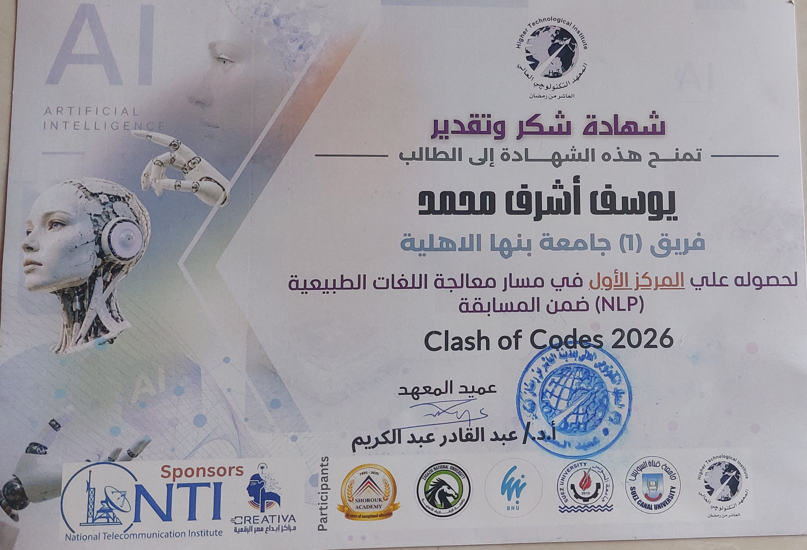

Building production AI
systems that work at
real scale.
I design and deploy end-to-end AI systems — from LLM orchestration and RAG pipelines to agentic workflows and cloud infrastructure. My stack spans LangChain, LangGraph, HuggingFace, and PyTorch, deployed on AWS and Azure. I focus on systems that move into production, not just demos — built to scale, monitored, and measurably better than what came before.
- Co-led the Machine Learning track, delivering technical sessions to students from multiple universities.
- Mentored members in machine learning fundamentals and practical applications while supporting hands-on workshops and collaborative learning initiatives.
- Hands-on with 8 core AWS services: EC2, S3, IAM, VPC, Lambda, RDS, CloudWatch.
- Designed secure, scalable architectures aligned with Solutions Architect best practices.
- Reduced projected cloud costs by 20% through optimized IAM policies and networking.
- Contributed to a computer vision project for dyslexia detection; processed and analyzed 500+ text samples to improve reading assistance accuracy.
- Collaborated with a team of 6 researchers; contributed to 2 technical presentations on AI applications in accessibility, achieving 85% model accuracy in preliminary testing.
Engineered a production-grade AI academic advisor chatbot for Benha National University, deployed as a REST API (FastAPI + Uvicorn) integrated into the BNUConnect mobile app, serving students across 3 program tracks (AI & ML, Software Development, Data Science). Built a stateful LangGraph ReAct agent with a custom Judging Loop, orchestrating 12 LangChain tools across a Neo4j knowledge graph, Supabase student profiles, and a Pinecone RAG pipeline for university bylaw Q&A. Designed a 5-step NLP preprocessing pipeline (reference resolution, entity extraction, fuzzy course name mapping, track normalization, query rewriting) that eliminates wasted tool calls and handles ambiguous queries via interactive disambiguation sessions.
Designed and implemented a natural language processing system to automatically correct spelling and grammar errors using Transformer models and custom tokenization strategies. The system handles real-world noisy text input and applies learned language patterns to produce corrected output.
Built a facial-recognition identity verification system using a pretrained FaceNet (Inception) encoder to generate 128-d face embeddings, with MTCNN handling automatic face detection and cropping before encoding. New users enroll by uploading a few face images to build their embedding profile; returning users are recognized by computing the L2 distance between their live capture and every stored embedding, matching against the closest identity below a distance threshold. Wrapped the pipeline in an interactive Gradio app that simulates a secure bank-account flow — scan face to log in, then create an account or deposit/withdraw funds — and deployed it live on HuggingFace Spaces.
Built a bilingual RAG chatbot that answers prospective students' admission questions in Arabic (Egyptian & MSA), Franco-Arabic, and English, backed by a hybrid retrieval pipeline combining dense search (Pinecone, bge-m3 embeddings) with sparse BM25, fused via reciprocal rank fusion and rescored with an optional Cohere reranker. An intent router short-circuits greetings, FAQs, and out-of-scope messages without an LLM call, while a Google Drive auto-sync job keeps the knowledge base current by detecting new, modified, and deleted source PDFs every 10 minutes. Shipped as a FastAPI service with a RTL/LTR-aware vanilla JS frontend, response caching, and Docker deployment.
Trained a deep learning model to classify human actions in video across 50 action categories from the UCF50 dataset — from sports (basketball, diving, javelin throw) to everyday activities (drumming, juggling, push-ups). Built a video preprocessing pipeline that samples a fixed number of frames per clip, resizes and normalizes them, and feeds the resulting sequence into a Keras/TensorFlow spatio-temporal classifier. Wrapped the trained model in an interactive Gradio web app that accepts uploaded video files, transcodes them with FFmpeg, and returns the top-3 predicted actions with confidence scores.
Built a distributed sentiment analysis pipeline on a 3-node Apache Spark cluster (1 master + 2 workers), fully containerized with Docker Compose, to classify tweets into Positive, Negative, Neutral, or Irrelevant. The Spark MLlib pipeline cleans and tokenizes raw text, strips stopwords, extracts 20,000 TF-IDF features via HashingTF + IDF, and trains a Logistic Regression classifier on ~75K labeled tweets — reaching 91.7% training / 80.2% validation accuracy. The trained pipeline model is served through a Flask web app for real-time predictions, returning the predicted class alongside a full confidence breakdown across all four categories, plus a REST endpoint for programmatic access.
Built in 2026 under competition conditions for Clash of Codes, an AI hackathon hosted by the Higher Technical Institute (HTI), competing on the NLP track. Built a RAG-based chatbot that answers questions grounded in historical data, retrieving relevant passages before generating responses to keep answers factually anchored. The assistant was made trilingual, responding fluently in Arabic, English, and Franco-Arabic to match how the judges and users actually type. The project's source was lost after the competition; the certificate is the surviving record of the build.
Implemented the Pix2Pix conditional GAN framework — a U-Net generator with skip connections paired with a PatchGAN discriminator — in TensorFlow/Keras to translate architectural line-drawing schematics into photorealistic building facades on the 606-image CMP Facades dataset. Trained the custom model for 600 epochs on a Tesla T4 GPU and benchmarked it against a pretrained PyTorch baseline across MAE, PSNR, and SSIM, with the custom model winning on every metric. Wrapped the pipeline in an interactive Gradio app for real-time schematic-to-facade inference.

Competed on the NLP track, building a multilingual RAG chatbot over historical data under competition conditions. The team placed 1st on the track, judged against the other NLP-track teams at the event.
Competed in a 3-person team through the qualification round, solving 4 problems to advance to the ECPC finals — the only team from our university to qualify. Reached the finalist stage without placing among the winners.